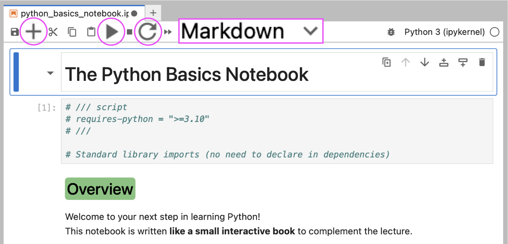
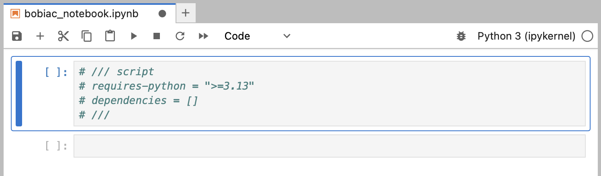
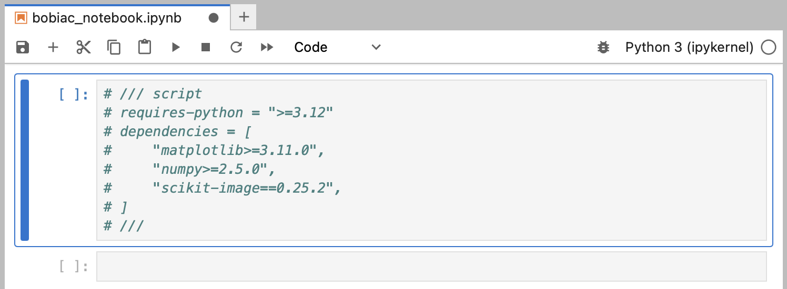

Jupyter Notebooks and juv#
Python code is usually saved in plain text files ending in .py. In this course, however, we will mostly not work with .py files directly. Instead, we will use Jupyter Notebooks (.ipynb files). This page explains what they are, how we are going to use them.
1. Terminal Commands#
Before we start, let’s go over some of the terminal commands that could be useful during the course.
First of all, what is a terminal? A terminal is a text-based interface that allows you to interact with your computer’s operating system. You can use it to run commands, navigate the file system, and manage files and directories.
On macOS and Linux, this program is simply called the Terminal. On Windows, we suggest using PowerShell (instead of the older cmd Prompt) since most of the commands we will use behave the same way as on macOS and Linux.
Tip
To open the terminal:
On macOS, use the
Command + Spaceshortcut to open Spotlight, then type “Terminal” and hitEnter.On Windows, use the
Windows + Rshortcut to open the Run dialog, then type “powershell” and hitEnter.
Here are a few basic commands that work on macOS, Linux, and the Windows PowerShell terminal (but not the Windows cmd Prompt):
Command |
Description |
|---|---|
|
Print the path of the current working directory. |
|
List the contents of the current directory. |
|
Change directory to |
|
Create a new directory named |
Note
💡 Relative paths: when navigating with cd, you can use . to refer to the current directory and .. to refer to the parent directory (for example, cd .. moves you up one level).
For example, consider the following folder organization:
Desktop/
├── bobiac/
│ ├── ...
└── data/
└── ...
If you are in Desktop/bobiac and want to move to a sibling folder Desktop/data, you don’t need to type the full path, you can instead go up one level and then into data:
cd ../data
2. What is a Jupyter Notebook?#
Running full .py files is great once you are familiar with Python and you are comfortable with the workflow, but for learning and experimenting it’s a bit clunky: you have to write the whole file, save it, run it, look at the output, then go back and edit.
In this course we will use Jupyter Notebooks and its particular file type with the extension .ipynb (short for interactive python notebook). For example, a file called bobiac.ipynb.
Jupyter Notebooks allow us to:
Write and run
Pythoncode in small chunks (called cells) and execute them one at a time.Display the output of each cell immediately below the cell, so you can see the results of your code as you go.
Mix
Pythoncode with text, images, and equations in the same document, which is great for learning purposes.
Tip
💡 A new and very valid alternative to Jupyter Notebooks is marimo, which uses plain .py files. We encourage you to have a look at it in the future, once you get more familiar with Python.
3. JupyterLab#
JupyterLab is the browser-based application we’ll use to open and work with Jupyter Notebooks files.

The key elements of the interface are highlighted in the screenshot above:
+button: adds a new cell.Cell type selector: a dropdown that switches a cell between Code (runs
Python) and Markdown (renders formatted text).▶ Run button (or
Shift + Enter): runs the selected cell and moves to the next one.⟳ Restart Kernel button: the
kernelis thePythonprocess running behind your notebook. If something goes wrong (an unexpected error, an infinite loop, or stale state from running cells out of order), use the ⟳ button to restart it and start fresh.
4. Python Packages and juv#
As we saw in the Python introduction, running Python code requires three things: a virtual environment, the packages (aka dependencies or libraries) your code imports, and the Python version you want to use.
This is also true for Jupyter Notebooks files (.ipynb). Managing these manually for each notebook would be tedious, and the kernel needs everything set up before JupyterLab even opens.
To handle all of this automatically, we use juv, a tool built on top of uv specifically designed for Jupyter Notebooks (check out the Getting Started with uv to learn more about uv). Instead of manually creating environments and installing packages, juv reads a dependencies list declared directly inside the notebook file and sets everything up for you in one command (through PEP 723, see below).
4.1 Installing Packages with juv#
A PEP (Python Enhancement Proposal) is a document that describes a new feature or convention for the Python language. PEP 723 is one of these proposals, and it defines a standard way to declare a script’s dependencies directly inside the file itself, using a special comment block at the top of the file:
# /// script
# requires-python = ">=3.12"
# dependencies = [
# "numpy",
# "matplotlib",
# ]
# ///
This means the notebook (or a .py file) is completely self-contained: anyone can run it and get the exact same environment, regardless of what is or isn’t already installed on their computer.
juv reads this block and automatically installs everything listed before launching JupyterLab, so you never have to manually create environments or install packages.
In the next sections, we will learn about three basic juv commands that we will use throughout the course: init, add, and run.
4.2 Initializing a Notebook#
To create a new notebook with a juv-compatible header:
uvx juv init bobiac_notebook.ipynb
This creates bobiac_notebook.ipynb with an empty ///script block at the top, ready for you to declare dependencies.

You can also set the Python version at creation time with the -p flag:
uvx juv init -p 3.12 bobiac_notebook.ipynb
This sets requires-python = ">=3.12" in the ///script block automatically.
Note
💡 All juv commands are prefixed with uvx, which is a shortcut for uv tool run. uvx juv means “fetch and run the juv tool”. See Getting Started with uv for more details on uvx.
4.3 Adding Packages to a Notebook#
To add a package to a notebook’s dependency list:
uvx juv add bobiac_notebook.ipynb numpy
This writes numpy into the ///script block inside the notebook file. You can add multiple packages at once, and even pin a specific version:
uvx juv add bobiac_notebook.ipynb numpy matplotlib "scikit-image==0.25.2"

4.4 Running a Notebook#
To launch a notebook in JupyterLab:
uvx juv run bobiac_notebook.ipynb
juv reads the ///script block, creates a temporary environment with all the listed dependencies installed, and opens JupyterLab in your browser — no manual environment creation or package installation needed.
Tip
🚀 pyrunner: if you like the idea of self-contained notebooks, check out pyrunner, a small desktop app (an icon on your computer, just like any other application) built specifically for PEP 723 scripts. You simply double-click it, select a .py (or .ipynb) file containing a ///script block, and it runs the script for you, installing uv itself first if it isn’t already on your computer.
This is especially useful if you write your own PEP 723 notebook and want to share it with someone who doesn’t know how to use Python or a terminal: they can just double-click pyrunner, pick your file, and run it, without ever opening a terminal. See the pyrunner repository for more details.
Tip
⚡ Running a notebook without opening JupyterLab: if you want to execute all cells in a notebook from top to bottom without manually opening JupyterLab and clicking through each one, use juv exec:
uvx juv exec bobiac_notebook.ipynb
This runs every cell in order and prints the output directly in the terminal — useful for re-running a notebook as a script, or quickly checking that everything still works after changing a dependency.
4.5 Importing Packages in a Notebook#
Before you can use a package inside a notebook cell, you need to import it:
import numpy
print(numpy.mean([1, 2, 3, 4]))
> 2.5
This makes everything inside the numpy package available, and you access its functions with the numpy. prefix.
Tip
✅ Best practice: it’s good practice to put all your imports in a dedicated cell at the very top of the notebook, before any other code. This makes it immediately clear, just by glancing at the first cell, which packages a notebook depends on.
Since typing the full package name every time can get tedious, it’s common to import a package with a shorter alias instead:
import numpy as np
print(np.mean([1, 2, 3, 4]))
> 2.5
Here, np is just a “nickname” for numpy — both refer to the exact same package, but np is much quicker to type. This is such a common convention that you’ll see import numpy as np (and similar aliases like import pandas as pd) at the top of almost every notebook that uses them.
Note
💡 You can technically choose any alias you like, but it’s best to stick to the conventional ones (like np for numpy), since that’s what most Python programmers will recognize at a glance.
5. Summary Table#
Here is a quick recap of all the terminal and juv commands we have seen in this section:
Command |
Description |
|---|---|
|
Print the path of the current working directory. |
|
List the contents of the current directory. |
|
Change directory to |
|
Create a new directory named |
|
Create a new |
|
Create a new |
|
Add |
|
Launch the notebook in JupyterLab, installing all dependencies automatically. Example: |
Note
💡 For the full list of juv commands and options, see the juv repository.